## _why_ **operating systems** ### csci 3411 ### Prof. **Sibin Mohan** <br> _<font size="5"> acknowledgments: some content modified from Silberschatz et al. and West</font>_ --- let's go back to our original questions... --- let's go back to our original questions... 1. _what_ is an operating system? 2. _why_ should I care? 3. _what_ do I need to know for this course? --- we already talked about two of these 1. <font color="purple">_what_ is an operating system?</font> 2. _why_ should I care? 3. <font color="purple">_what_ do I need to know for this course?</font> --- let's look at the remaining one... 1. _what_ is an operating system? 2. **<font color="darkred">_why_ should I care?**</font> 3. _what_ do I need to know for this course? --- **<font color="darkred">_why_ should I care?**</font> --- ## undergraduate education --- ## undergraduate education - why are you here? - in college --- ## undergraduate education - why are you here? - in college - in CS? --- ## undergraduate education - why are you here? - in college - in CS? - in OS? --- ### this semester: perspective --- ### this semester: perspective - you have at least 2 years under your belt --- ### this semester: perspective - you have at least 2 years under your belt - you have learnt the _basics_ --- ### this semester: perspective - you have at least 2 years under your belt - you have learnt the _basics_ - undergraduate → a **unique, limited** opportunity --- ### this semester: perspective - you have at least 2 years under your belt - you have learnt the _basics_ - undergraduate → a **unique, limited** opportunity - **<font color="darkred">learning for learning's sake</font>** --- ### this semester: perspective - you have at least 2 years under your belt - you have learnt the _basics_ - undergraduate → a **unique, limited** opportunity - **<font color="darkred">learning for learning's sake</font>** - **<font color="darkred">intellectual community</font>** --- ### decision time --- ### decision time - are you here to get a **degree**? --- ### decision time - are you here to get a degree? - are you here to **improve as a human being**? --- ### thought experiment --- ### thought experiment if you kept on doing what you're doing, when done, --- ### thought experiment if you kept on doing what you're doing, when done, would you be **happy** with your undergraduate education? --- ### this semester - **challenge** + **opportunity** --- ### this semester - **challenge** + **opportunity** - **<font color="darkred">take responsibility</font>** for your own education! --- ## perspective what is all of this for? --- ## perspective what is all of this for? | goal | notes | | --- | --- | | **$$$** || --- ## perspective what is all of this for? | goal | notes | | --- | --- | | **$$$** | diminishing returns → then what?<br>means to an end → what is **your** end? | --- ## perspective what is all of this for? | goal | notes | | --- | --- | | **$$$** | diminishing returns → then what?<br>means to an end → what is **your** end? | | **prestige/competition** <br> (climb the ladder) | | --- ## perspective what is all of this for? | goal | notes | | --- | --- | | **$$$** | diminishing returns → then what?<br>means to an end → what is **your** end? | | **prestige/competition** <br> (climb the ladder) | personal goals be defined by **others**?<br>means to an end → what is your end? | --- ## perspective what is all of this for? | goal | notes | | --- | --- | | **$$$** | diminishing returns → then what?<br>means to an end → what is **your** end? | | **prestige/competition** <br> (climb the ladder) | personal goals be defined by **others**?<br>means to an end → what is your end? | | **achieve** X, Y, Z <br> by time A, B, C || --- ## perspective what is all of this for? | goal | notes | | --- | --- | | **$$$** | diminishing returns → then what?<br>means to an end → what is **your** end? | | **prestige/competition** <br> (climb the ladder) | personal goals be defined by **others**?<br>means to an end → what is your end? | | **achieve** X, Y, Z <br> by time A, B, C | life throws curve balls, hard to be accurate<br>the world moves goal posts | --- ## perspective what is all of this for? | goal | notes | | --- | --- | | **$$$** | diminishing returns → then what?<br>means to an end → what is **your** end? | | **prestige/competition** <br> (climb the ladder) | personal goals be defined by **others**?<br>means to an end → what is your end? | | **achieve** X, Y, Z <br> by time A, B, C | life throws curve balls, hard to be accurate<br>the world moves goal posts | | focus on **passions** | | --- ## perspective what is all of this for? | goal | notes | | --- | --- | | **$$$** | diminishing returns → then what?<br>means to an end → what is **your** end? | | **prestige/competition** <br> (climb the ladder) | personal goals be defined by **others**?<br>means to an end → what is your end? | | **achieve** X, Y, Z <br> by time A, B, C | life throws curve balls, hard to be accurate<br>the world moves goal posts | | focus on **passions** | pressure to "have passion" is non-productive<br>being **good at something promotes passion** | || --- ## perspective → **happiness** --- ## perspective → **happiness** - being **<font color="darkred"> good at something</font>** --- ## perspective → **happiness** - being **<font color="darkred"> good at something</font>** - goals are good - a strong focus on **continual improvement** is better - contributing to an environment --- ## perspective → **happiness** - being **<font color="darkred"> good at something</font>** - goals are good - a strong focus on **continual improvement** is better - contributing to an environment - **relationships** with peers - network, values, acceptance --- ## perspective → **happiness** - being **<font color="darkred"> good at something</font>** - goals are good - a strong focus on **continual improvement** is better - contributing to an environment - **relationships** with peers - network, values, acceptance - **moderate** judgment (self & others) - judging yourself → for what mental benefit? - judging others → enough negativity in the world --- ## perspective → **OS in your life** how do you apply "OS concepts" in life? --- ## perspective → **OS in your life** how do you apply "OS concepts" in life? | | | |-------|---------| | being **good at something** | | | **relationships** with peers | | | **moderate** judgment (self & others) | | || --- ## perspective → **OS in your life** how do you apply "OS concepts" in life? | | | |-------|---------| | being **good at something** | **repetition** and **practice** <br> learn to think about **abstractions** <br> **hard work** → accomplishment| | **relationships** with peers | | | **moderate** judgment (self & others) | | || --- ## perspective → **OS in your life** how do you apply "OS concepts" in life? | | | |-------|---------| | being **good at something** | **repetition** and **practice** <br> learn to think about **abstractions** <br> **hard work** → accomplishment| | **relationships** with peers |build your network <br> **2nd & 3rd job offers** | | **moderate** judgment (self & others) | | || --- ## perspective → **OS in your life** how do you apply "OS concepts" in life? | | | |-------|---------| | being **good at something** | **repetition** and **practice** <br> learn to think about **abstractions** <br> **hard work** → accomplishment| | **relationships** with peers |build your network <br> **2nd & 3rd job offers** | | **moderate** judgment (self & others) | **not a competition** <br> your **own** path+accomplishments | || --- ## the process is the goal --- ## the process is the goal **note**: goal **<font color="darkred">is not</font>** completing assignments --- ### the goal → **practice** & **experience** --- ### the goal → **practice** & **experience** - **learning by doing** → the concepts aren't hard --- ### the goal → **practice** & **experience** - **learning by doing** → the concepts aren't hard - the **doing is the learning** → debug + investigate --- ### the goal → **practice** & **experience** - **learning by doing** → the concepts aren't hard - the **doing is the learning** → debug + investigate - like running → "_the suffering is the point_" --- ### goal vs. daily decisions - healthy eating & "_never shop when hungry_" - "_stick to the plan_" & "_never make race day decisions_" --- <img src="./img/sysarch/jfk_moon.avif" height="750"> --- ## your OS plan - give yourself **time** - always find ways to make **progress** --- ## your OS plan - give yourself **time** - always find ways to make **progress** - **understand** vs. **make it work** --- ## academic honesty --- ## academic honesty - what is academic dishonesty? - who does cheating **impact**? --- <!-- .slide: data-background-color="white" --> ### human economic value: traditional <p>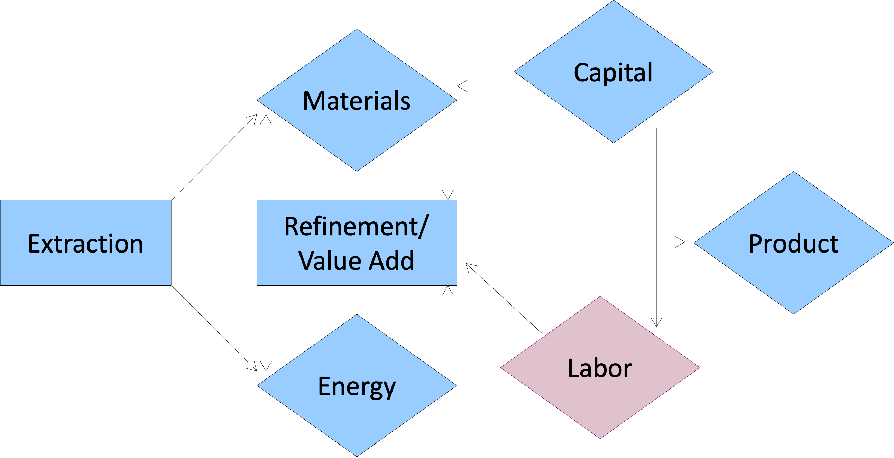</p> --- <!-- .slide: data-background-color="white" --> ### human economic value: software <p>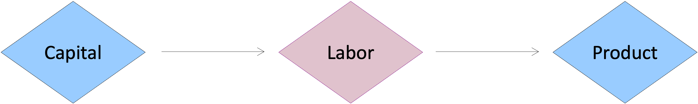</p> **we make something out of nothing!** --- <!-- .slide: data-background-color="white" --> ### human economic value: software **we make something out of nothing!** - using our **intellectual capability** - **<font color="darkred">your education is in your hands</font>** --- <!-- .slide: data-background-color="white" --> ### unrealistic doom and gloom <p>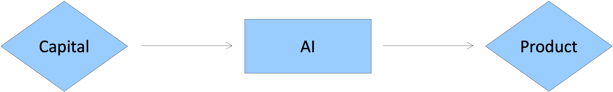</p> where is **labor** ;-( --- <!-- .slide: data-background-color="white" --> ## path forward <p>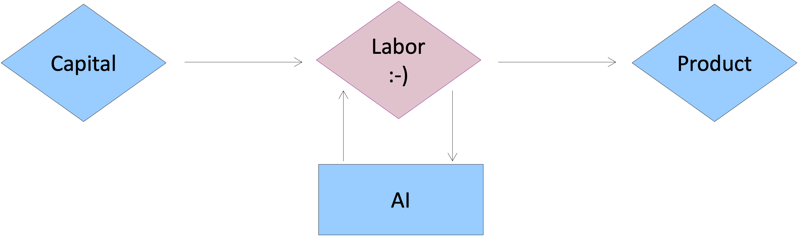</p> --- <!-- .slide: data-background-color="white" --> ## path forward 1. you have to be **value-added** to AI → take learning seriously! --- <!-- .slide: data-background-color="white" --> ## path forward 1. you have to be **value-added** to AI → take learning seriously! 2. demand for software seems **infinite** → step back from doom/gloom --- ## academic honesty --- ## academic honesty - code **should not** be shared outside of a group - code you write should **be your own** - **contact me** if you're worried or desperate --- unable to complete an assignment → stress, pressure, challenges deciding to cheat → **deliberate choice**! --- ### ML-generated code --- ### ML-generated code - early studies on "vibe coding" --- ### ML-generated code - early studies on vibe coding - makes you dumber - makes you lazier - **inhibits your learning** - doesn't help you know **what you don't know** --- ### ML-generated code use these technologies on personal projects or in the future --- ### ML-generated code use these technologies on personal projects or in the future - decouple learning from productivity (LoC/min) - main goal → refine your craft! --- <!-- .slide: data-background-color="white" --> <center> <div class="multicolumn"> <div> </div> <code>if an LLM is better than you, what value do you bring? </code> </div> </center> --- many systems have multiple "levels" --- <!-- .slide: data-background-color="white" --> ## "high-level" ||| |:----:|:----:| | cars <br> | computers <br> <p>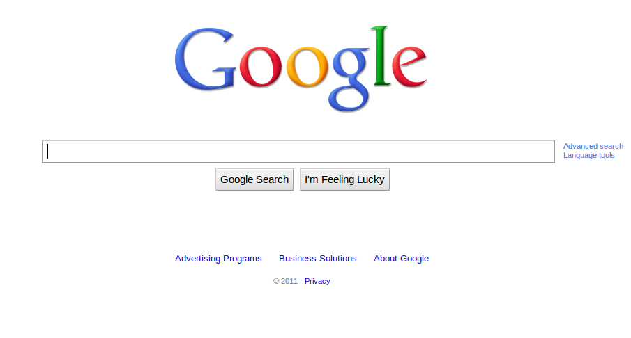</p>| || --- <!-- .slide: data-background-color="white" --> ## ...details... cars & computers <p>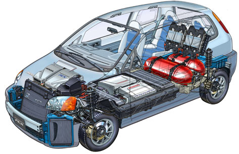</p> <p>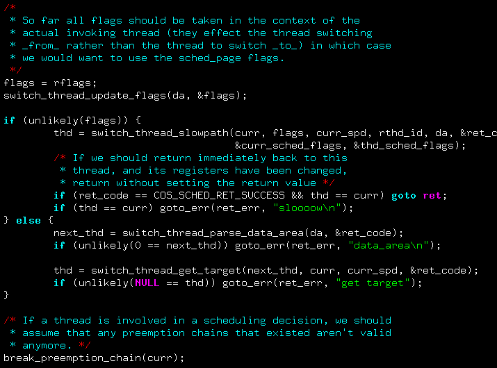</p> <p>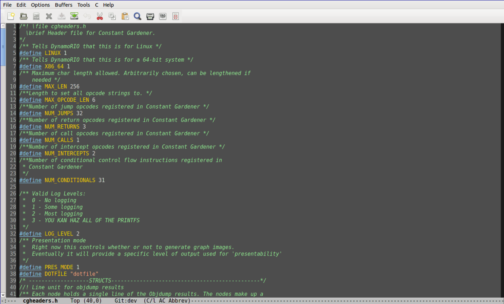</p> --- <!-- .slide: data-background-color="white" --> ## ..."low-level" cars & computers <p>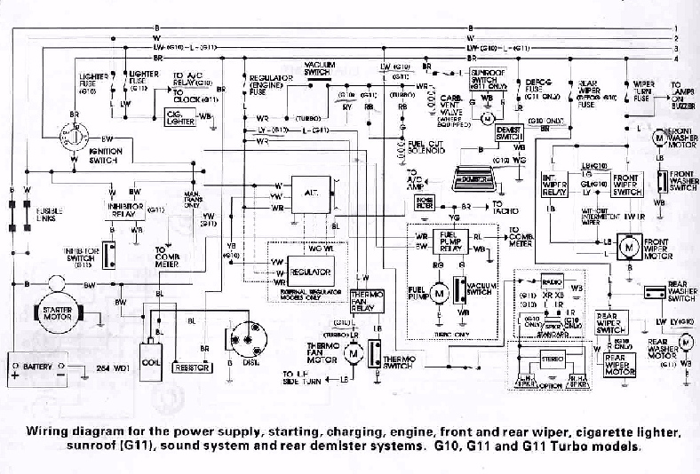</p> <p>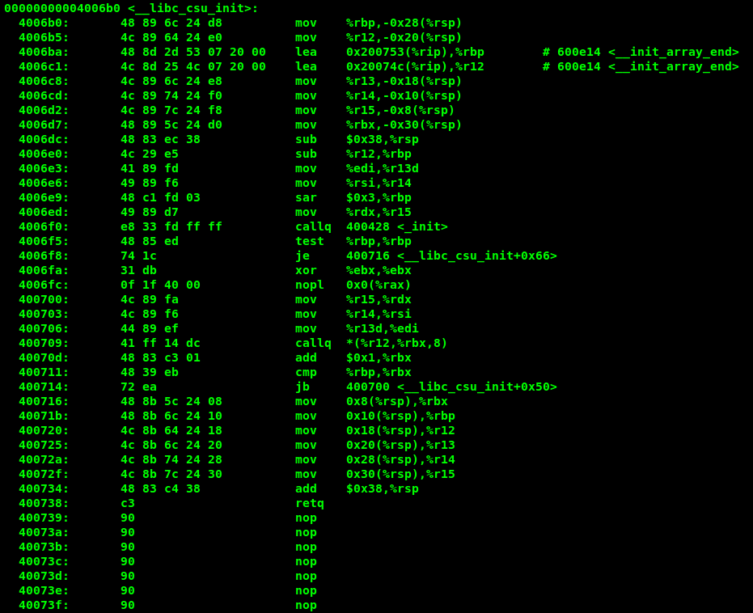</p> --- ## "high-level" programming the feels <p>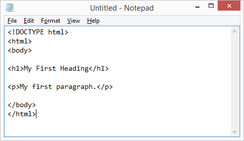</p> --- ## ...details... high-level programming we got this <p>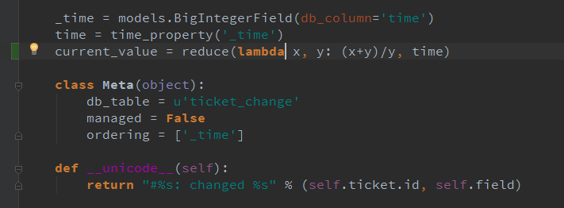</p> <p>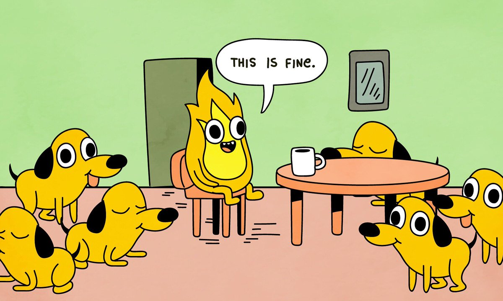</p> --- ## ..."low-level" C programming <deep sigh> <p>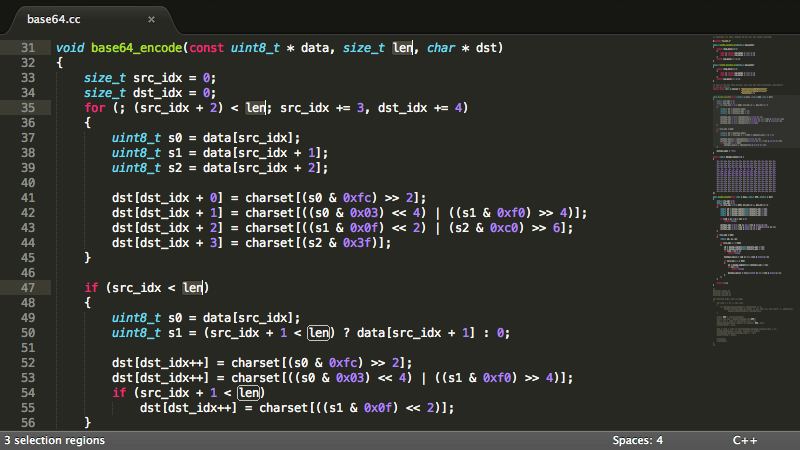</p> --- ## xv6 and kernel programming --- ## xv6 and kernel programming <div class="multicolumn"> <div> <ul> <li>demystify computers</li> <li>work with <b>larger code bases</b></li> <li><b>careful</b> in your coding</li> <li>learn about <b>abstraction</b></li> </ul> </div> <div> </div> </div>